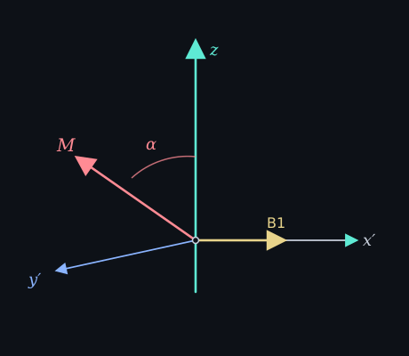

Continues from Larmor precession. M already walks around B0 at ω₀.
A coil along z hears nothing from M precessing around z. You have to tip M off z so a piece of it sits in xy and keeps rotating. The tip is an RF pulse: a small field B1 in the xy plane, oscillating at ω₀. Same frequency as the walk. That matching is resonance. Push a swing at its natural period. Off-frequency B1 mostly misses.
In the frame that rotates at ω₀, B0 drops out and B1 looks still. M then precesses around B1 instead of around B0. How far it tips is the flip angle. For a constant-amplitude pulse of duration t_p:
α = γ B1 t_p

A 90° pulse parks M in xy. A 180° pulse sends it to −z. The scanner talks in α, not in B1.
If B1 is off-resonance, M sees an effective field that is not B1, so the tip is smaller and the axis is wrong. Slice selection later uses a gradient so only one slab is on-resonance. That is a later note. What the coil actually records is the rotating xy component, not Mz.
Next note: T1 and T2 relaxation.